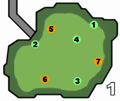

| 맵 이미지 없음 | 종별 | 위치 | 촌장 / 집회욕장 하위 |
집회욕장 상위 |
훈련소 |
|---|---|---|---|---|---|
| 채취 | 창 선반 | 발리스타탄 | |||
| 채취 | 포탄 상자 | 대포탄 | |||
| 장치 | 스위치 (돛대 아래) |
○ 버튼으로 큰 징을 울린다 | |||
| 장치 | 스위치 (뱃머리) |
○ 버튼으로 격룡창을 기동 | |||
| 발리스타 | 좌현 및 우현 앞 부분 | 발리스타탄 or 구속탄을 소지한 상태로 ○ 버튼으로 준비 준비 상태에서 R 버턴을 누르면 스코프 준비 상태에서 ○ 버튼을 누르면 발사 |
|||
| 대포 | 좌현 및 우현 뒷 부분 | 대포탄을 소지한 상태로 ○ 버튼 발사 | |||
| 맵 이미지 없음 | 위치 | 종별 | 촌장 / 집회욕장 하위 |
집회욕장 상위 |
훈련소 |
|---|---|---|---|---|---|
| ①~④ 봉산룡의 등 (짙은 푸른색의 결정) |
채굴 | 시브라이트광석 봉산룡갑암각 봉산룡창린 |
시브라이트광석 뎁스라이트광석 봉산룡창린 봉산룡갑암각 |
| 맵 이미지 없음 | 위치 | 종별 | 촌장 / 집회욕장 하위 |
집회욕장 상위 |
훈련소 |
|---|---|---|---|---|---|
| ① 남서쪽 돌 |
채취 | 숫돌 자갈 자갈x2 |
|||
| ② 중앙 용암연못의 북쪽 돌 |
채취 | 숫돌 의문의두골 연석탄x2 |
|||
| ③ 북동쪽 붉은 풀 |
채취 | 화약초 소거의씨 괴력의씨 |
|||
| ④ 북서쪽 붉은 풀 |
채취 | 약초 인내의씨 용살열매 |
| 맵 이미지 없음 | 위치 | 종별 | 촌장 / 집회욕장 하위 |
집회욕장 상위 |
훈련소 |
|---|---|---|---|---|---|
| ① 남동쪽 돌 |
채취 | 숫돌 자갈 자갈x2 |
|||
| ② 중앙 돌 |
채취 | 빙결정 자갈 그라시스메탈 |
|||
| ③ 상부의 석벽 |
채굴 | 빙결정 아이시스메탈 그라시스메탈 라이트크리스탈 |
|||
| ④ 남서쪽 돌 |
채취 | 숫돌 빙결정 자갈 |
|  | 위치 | 종별 | 촌장 / 집회욕장 하위 |
집회욕장 상위 |
훈련소 |
|---|---|---|---|---|---|
| ① 잡동사니 |
채취 | 발리스타탄 | |||
| ② 잡동사니 |
채취 | 발리스타탄 | |||
| ③ 잡동사니 |
채취 | 발리스타탄 | |||
| ④ 푸른 꽃 |
채취 | 약초 소거의씨 괴력의씨 인내의씨 |
|||
| ⑤ | 발리스타 | 발리스타탄 or 구속탄을 소지한 상태로 ○ 버튼으로 준비 준비 상태에서 R 버턴을 누르면 스코프 준비 상태에서 ○ 버튼을 누르면 발사 |
|||
| ⑥ | 발리스타 | ||||
| ⑦ | 발리스타 |
| 맵 이미지 없음 | 위치 | 종별 | 집회욕장/하위 | 집회욕장/상위 촌장/임종을 먹는자 |
훈련소 |
|---|---|---|---|---|---|
| ① 오른쪽 앞의 나무통 |
채취 | 작은통폭탄 지급전용큰통폭탄 |
생명분진 | ||
| ② 오른쪽 안쪽의 나무통 |
채취 | 지급전용섬광옥 휴대마비함정 |
지급전용섬광옥 | ||
| ③ 왼쪽 앞의 나무통 |
채취 | 회복약G 응급약 |
회복약G | ||
| ④ 왼쪽 안쪽의 돌 |
채취 | 생명분진 휴대숫돌 휴대식량 |
휴대식량 휴대숫돌 |